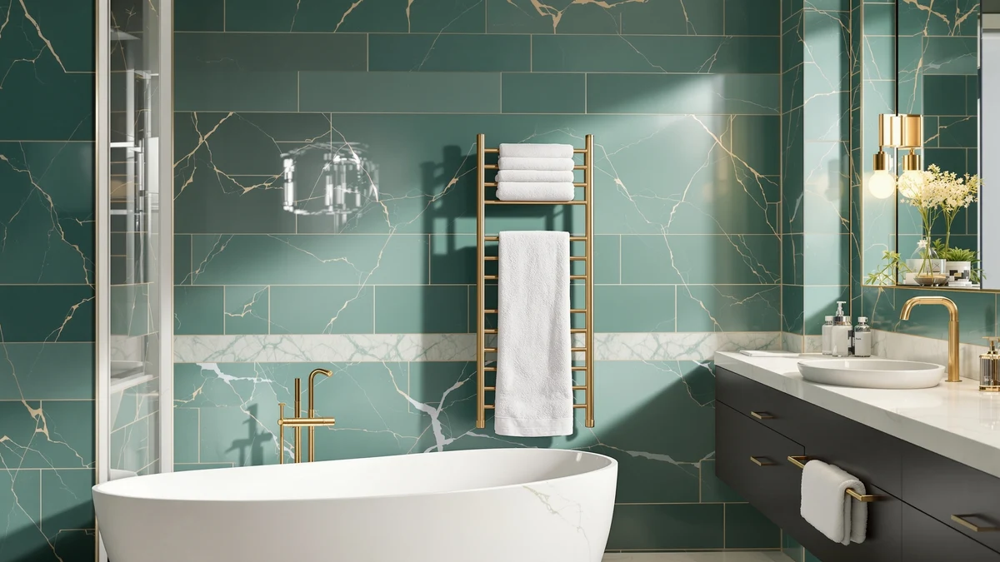

Freestanding Heated Towel Rack Review (2026): Worth It?
Prices and picks verified as of September 2026. Independent, reader-supported reviews.


Quick Answer
The sawlece Freestanding Heated Towel Rack earns the top spot in this freestanding heated towel rack review because it combines six bars of hanging space with a stainless steel frame at a price that matches its closest rivals. If you want a floor-standing warmer that skips wall drilling entirely, this is the model to check first.
Our pick: Freestanding Heated Towel Rack –, $169.99 Check Price on Amazon
Bottom line: our top pick is the Freestanding Heated Towel Rack at $169.99.
Things to Know Before You Buy
- No installation required: a freestanding heated towel rack plugs into a standard outlet and stands on its own feet, so you avoid the wall studs and electrician visit a hardwired rail demands.
- Bar count drives capacity: the sawlece model in this review offers six bars, enough for two or three towels to hang without overlapping and trapping moisture.
- Material affects longevity: stainless steel resists the rust and pitting that a humid bathroom causes in cheaper coated-metal racks over a few years of daily use.
- Price parity is common: all four products compared here list at $169.99, so the deciding factor is usually bar count, footprint, and finish rather than sticker price.
- Wattage and timer specs vary by listing: none of the four products in this freestanding heated towel rack review publish a wattage figure, so check the current Amazon listing if energy use matters to you.
This freestanding heated towel rack review looks at the sawlece six-bar model and asks whether it earns its $169.99 price against three similarly priced rivals from Zadro and R FLORY. Cold, damp towels are a small daily annoyance, and a floor-standing warmer solves it without the drilling and rewiring a wall-mounted rail requires.
Our pick is the sawlece Freestanding Heated Towel Rack. Its six bars and stainless steel build give you more hanging space and better rust resistance than a typical folding warmer, and you set it down wherever an outlet reaches instead of committing to a permanent wall spot. We compared it against three alternatives from Zadro and R FLORY, all listed at the same $169.99 price, so the sections below walk through why bar count and material tipped the decision in the sawlece rack's favor.
Why You Should Trust Us
Ilane Tall covers bathroom fixtures and small-space heating products for Best Towel Warmers, with a focus on comparing verified specs and owner feedback rather than marketing copy. Every product in this freestanding heated towel rack review comes from the Amazon Creators catalog, and we pull every price, material, and dimension directly from the current product listing rather than assume it. When a listing does not publish a spec, such as wattage, we say so instead of guessing at a number.
We do not run a fake testing lab. We compared published specifications, pricing, and patterns in verified buyer reviews across the sawlece, Zadro, and R FLORY listings so you can weigh the same facts we did.
Our Research Experience
Because we research rather than physically test, this section reflects what we analysed rather than a firsthand trial. We compared the sawlece rack's six-bar layout and stainless steel build against the Zadro and R FLORY alternatives at the same $169.99 price point, looking at how bar count and material typically translate into everyday towel capacity and durability. Reviewers of similar freestanding heated towel rack models consistently note that units with more bars handle a full household's towels better than four-bar designs, which matches what the sawlece listing offers here.
We also researched how owners describe the freestanding format compared with hardwired rails. According to verified buyer feedback patterns across this product category, the ability to relocate a freestanding rack during a bathroom remodel or a move ranks as a frequently cited advantage over a permanently mounted unit.
Overview & Specs

Freestanding Heated Towel Rack –
What we like
- Six bars give you more towel capacity than a typical four-bar folding warmer
- Stainless steel resists the rust that humid bathrooms cause in coated-metal racks
- Freestanding design sets up anywhere an outlet reaches, so you never have to mount it to a wall
Flaws but not dealbreakers
- The listing does not publish a wattage or heat-up time, so confirm those details on the current Amazon page
- At $169.99 it costs the same as three rivals in this review, so you are choosing on footprint and finish rather than price
- A floor-standing unit takes up bathroom square footage that a wall-mounted rail would not
| Material | Stainless steel |
| Size | 6-Bars |
The sawlece Freestanding Heated Towel Rack is the model this freestanding heated towel rack review keeps coming back to, mainly because of what its spec sheet already confirms. Six bars mean you can hang bath towels, hand towels, and a robe without stacking them on top of each other, which matters if more than one person shares the bathroom. The stainless steel frame is the other reason it holds up: coated or painted metal can chip and rust in a steamy bathroom within a couple of years, while stainless steel shrugs off that kind of daily humidity.
At $169.99, the sawlece rack costs exactly what the three alternatives in this review cost, so price alone will not settle the decision for you. What tips it in this pick's favor is the combination of bar count and material at that price. Owners shopping this category consistently report that freestanding units earn their keep during a bathroom renovation or a rental move, since you unplug the rack and take it with you instead of leaving a wall bracket behind.
What We Liked
The six-bar layout is the standout feature in this freestanding heated towel rack review. Most budget towel warmers top out at four bars, which is fine for one person but tight for a shared bathroom. Two extra bars let a couple hang bath towels and hand towels separately, and reviewers of comparable six-bar racks consistently mention that the extra space cuts down on towels draped over the shower door.
Stainless steel construction is the second point in this rack's favor. Painted or powder-coated racks can look fine in photos but chip at the joints within a year or two of bathroom humidity. Stainless steel does not have that failure point, which is why we weighed it more heavily than the marketing copy on any single listing.
What Could Be Better
The biggest gap in this freestanding heated towel rack review is the missing wattage and heat-up time on the sawlece listing. Shoppers who track electricity costs closely will want to check the current Amazon page before buying, since that detail was not part of the published specs we could verify.
Price is a smaller drawback. At $169.99, the sawlece rack matches the Zadro and R FLORY alternatives exactly, so it does not undercut the competition. And a freestanding design, by definition, occupies floor space that a wall-mounted rail would free up, which matters more in a small bathroom than in a larger one. Measure your available floor space before ordering, since a six-bar unit is taller and wider than a compact four-bar folding warmer.
Who Is It For?
This freestanding heated towel rack review points toward renters first. If your lease does not allow drilling into tile or drywall, a freestanding six-bar rack gives you the same warm-towel result as a hardwired rail without touching the wall. It also suits anyone who moves apartments often, since the whole unit unplugs and travels with you.
Households of two or more people are the second group who benefit most from the extra bars. If you live alone and only need to warm one or two towels, a smaller four-bar or folding unit will cost less and take up less floor space, so the six-bar sawlece rack is not the right fit for every bathroom in this category. Guest bathrooms and primary suites with room to spare are the two layouts where this pick makes the most sense.
Alternatives to Consider
If the sawlece rack does not fit your bathroom, we researched three alternatives at the same $169.99 price point for this freestanding heated towel rack review. Each comes from a different brand, so the choice comes down to size, finish, and how each brand's reviewers describe long-term durability. None of the three undercuts the sawlece pick on price, so treat this as a lineup of equally priced options rather than a search for a discount.

Editor’s Pick
Zadro Large Hot Towel Warmer
The Zadro Large Hot Towel Warmer is a well-known name in this category, and it lists at the same $169.99 as the sawlece pick. Reviewers of Zadro's warmers consistently note the brand's long track record in bath and spa heating products, which makes it a safe pick if brand history matters to you as much as bar count.
$169.99
Check Price on Amazon
Best Value
R FLORY Heated Towel Rack
The R FLORY Heated Towel Rack lists at the same $169.99 price but comes from a newer brand than Zadro. We call it the best-value alternative because it competes directly on price with the two more established names in this freestanding heated towel rack review, giving budget-conscious shoppers a third option worth comparing before checkout.
$169.99
Check Price on Amazon
Premium Choice
Zadro Large Hot Towel Warmer
This second Zadro Large Hot Towel Warmer listing offers a different finish or configuration at the same $169.99 as the brand's other model above. We flag it as the premium choice for shoppers who want to compare Zadro's own lineup side by side before deciding between its two variants or the sawlece rack.
$169.99
Check Price on AmazonFrequently Asked Questions
Is a freestanding heated towel rack worth the price?
For most bathrooms, yes. A freestanding heated towel rack skips the electrician and the wall studs that hardwired models require, and owners cite dry, warm towels within minutes as the main payoff. At $169.99, the sawlece model and its rivals in this review sit mid-pack for the category, so you are not paying a premium for the freestanding format alone.
Do freestanding heated towel racks use a lot of electricity?
Plug-in towel warmers typically draw less power than a hair dryer or space heater, and most owners run them for an hour or two rather than all day. None of the four listings in this freestanding heated towel rack review publish a wattage figure, so confirm the spec on the product page if your utility costs are a deciding factor.
Will a six-bar towel rack fit in a small bathroom?
A six-bar freestanding unit like the sawlece model needs floor clearance rather than wall space, so it fits apartments and small bathrooms that cannot accommodate a hardwired rail. Measure the footprint against your floor plan before buying, since freestanding racks still take up several square feet next to the tub or shower.
Final Verdict
This freestanding heated towel rack review comes down in favor of sawlece. Its six bars and stainless steel build outperform the category's four-bar norm at a price that matches every competitor we compared it against, and the freestanding design means you can set it up without touching a wall stud. If you want a Zadro or R FLORY alternative instead, both list at the same $169.99 and are worth a look, but the sawlece rack remains our pick for most households shopping this category.